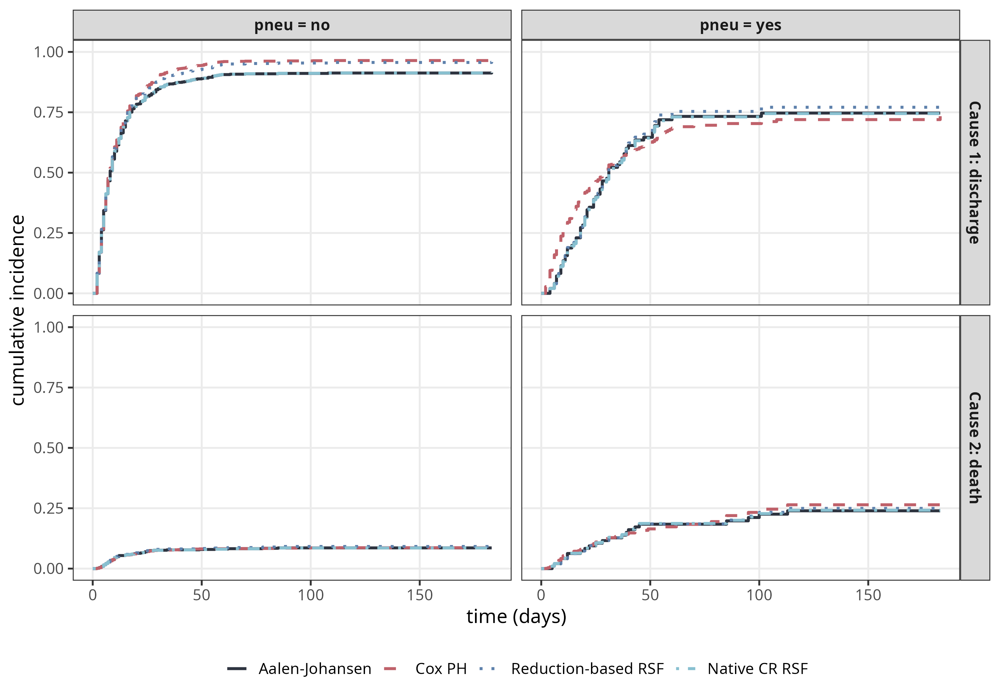
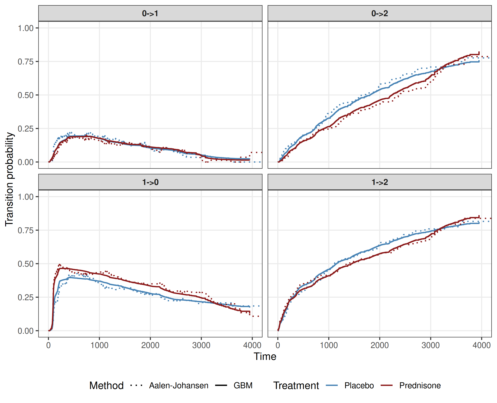

21 Reductions for Event-History Analysis
This page is a work in progress and minor changes will be made over time.
Chapter 4 introduced event-history analysis, showing that more complex time-to-event settings, including competing risks and multi-state models, can be characterized by cause-specific or transition-specific hazards. In particular, the cumulative incidence function (CIF) was shown to depend on all cause-specific hazards (4.9), and transition probabilities in multi-state models were expressed via the product integral over all transition-specific hazards (4.18).
This chapter leverages these relationships to formulate event-history analysis as a reduction to multiple single-event hazard estimation problems. The key principle is to separately model each cause as the event of interest and treat the others as censoring events, repeating this for all possible causes. This enables any distribution-predicting model to be applied in the more general event-history setting by first predicting the cause-specific hazards and then combining them into CIFs or transition probabilities.
21.1 Competing Risks via Cause-Specific Hazards
Recall the competing-risks setting of Section 4.2: subjects start in an initial state \(0\) and may transition to one of \(q\) absorbing states \(e \in \{1,\ldots,q\}\), observed as data \((\mathbf{x}_i, t_i, e_i)\) with \(e_i = 0\) encoding censoring. The cause-specific hazard \(h_e(\tau \mid \mathbf{x})\), cumulative hazard \(H_e(\tau \mid \mathbf{x})\), all-cause survival \(S(\tau \mid \mathbf{x})\), and cumulative incidence function \(F_e(\tau \mid \mathbf{x})\) are the building blocks the reduction will combine; their definitions are given in Section 4.2 and are referred to as needed below.
The reduction principle is to estimate each \(h_e\) separately by treating only events of type \(e\) as events of interest and all other event types as censoring, then combine the per-cause hazard estimates into \(\hat{S}\) and \(\hat{F}_e\). Two variants differ in whether each cause is fit independently (Section 21.1.1) or jointly via a single stacked model (Section 21.1.2); their tradeoffs are summarised in Section 21.1.3.
21.1.1 Separate datasets
One realization of the reduction builds one dataset per cause and fits one independent hazard model to each. Figure 21.1 summarizes the construction on a toy three-subject example with two competing events.

The three steps in Figure 21.1 are:
Create cause-specific datasets (Step 1 of Figure 21.1). For each cause \(e \in \{1,\ldots,q\}\) build \(\mathcal{D}_e\) by relabelling the status: \(\delta_{i,e} = \mathbb{I}(e_i = e)\). Events of type \(e\) remain events, all other event types are treated as censored at time \(t_i\), and the tuple \((\mathbf{x}_i, t_i, \delta_{i,e})\) is the observation for subject \(i\) in \(\mathcal{D}_e\). This is valid because \(h_e(\tau \mid \mathbf{x})\) quantifies the instantaneous risk of event \(e\) among subjects still in state \(0\), regardless of how competing events are handled after they leave the risk set.
Fit single-event models (Step 2 of Figure 21.1). Apply any learner capable of distributional prediction to each \(\mathcal{D}_e\), yielding cause-specific (cumulative) hazard estimates \(\hat{h}_e(\tau \mid \mathbf{x})\) or \(\hat{H}_e(\tau \mid \mathbf{x})\).
Combine into all-cause survival and CIFs (Step 3 of Figure 21.1). Combine the cause-specific cumulative hazards into the all-cause survival probability via \[ \hat{S}(\tau\mid\mathbf{x}) = \exp\!\left(-\sum_{e=1}^{q} \hat{H}_e(\tau\mid\mathbf{x})\right), \tag{21.1}\] and assemble each cause-specific cumulative incidence function via the discrete Aalen-Johansen-style sum \[ \hat{F}_e(\tau\mid\mathbf{x}) = \sum_{k:\,t_{(k)} \leq \tau} \hat{S}(t_{(k-1)}\mid\mathbf{x})\, \triangle\hat{H}_e(t_{(k)}\mid\mathbf{x}), \tag{21.2}\] with cumulative-hazard increment \(\triangle\hat{H}_e(t_{(k)}\mid\mathbf{x}) = \hat{H}_e(t_{(k)}\mid\mathbf{x}) - \hat{H}_e(t_{(k-1)}\mid\mathbf{x})\) in the interval \((t_{(k-1)}, t_{(k)}]\) (matching the notation of (4.11)).
This procedure is a direct analogue of the Aalen-Johansen estimator (4.11), with the non-parametric hazard estimates of Section 4.2.2 replaced by model-based estimates that can incorporate covariate effects.
21.1.2 Stacked dataset
An alternative is to construct a single dataset containing one row per (subject, cause) pair, with an additional indicator \(c \in \{1, \ldots, q\}\) recording which cause that row represents. Figure 21.2 illustrates the construction.
![Left-to-right flowchart for the stacked variant of the cause-specific reduction. The original competing risks dataset (left) is expanded into a single stacked dataset with an additional cause-indicator column c, where each original observation contributes one row per cause. A single hazard model with a c-by-x interaction is fit to this stacked dataset, and per-cause hazards (recovered by evaluating the model at each value of c) are combined into the same downstream quantities as in the separate-models version.](Figures/reductions/cr-reduction-stacked.png)
The three steps in Figure 21.2 are:
Stack the cause-specific datasets (Step 1 of Figure 21.2). The per-cause dataset construction is identical to step 1 of Section 21.1.1: each \(\mathcal{D}_e\) relabels the status as \(\delta_{i,e} = \mathbb{I}(e_i = e)\). The cause-specific datasets are then concatenated row-wise into a single stacked dataset, augmented by an additional cause indicator \(c \in \{1, \ldots, q\}\) recording which cause each row represents. A subject who experienced cause \(1\) thus contributes one row with \((c,\delta) = (1, 1)\) and a second row with \((c,\delta) = (2, 0)\).
Fit a single stacked hazard learner (Step 2 of Figure 21.2). A single learner is fit to the entire stacked dataset with \(c\) included as a feature, typically with a full \(c \times \mathbf{x}\) interaction so each cause retains its own hazard structure, or with interactions discovered automatically by a flexible learner. At prediction time, the cause-specific hazard is obtained by conditioning the fitted hazard on the cause, e.g. \[ \hat{h}_e(\tau \mid \mathbf{x}) = \hat{h}(\tau \mid \mathbf{x}, c = e), \qquad e \in \{1,\ldots,q\}. \]
Combine into all-cause survival and CIFs (Step 3 of Figure 21.2). Identical to step 3 of Section 21.1.1: once the per-cause hazards \(\hat{h}_e\) have been extracted, \(\hat{S}\) follows from (21.1) and each \(\hat{F}_e\) from (21.2).
21.1.3 Separate vs. stacked
Both variants target the same per-cause hazards, but they have different advantages and disadvantages in practice.
The separate variant:
- Mix-and-match flexibility. The cause-specific fits are entirely decoupled, so different model classes can in principle be used across causes (for example, a Cox model for one cause and a random survival forest for another), though typically the same class is used throughout.
- Independent tuning. Hyperparameters (regularisation strength, tree depth, etc.) can be chosen separately for each cause, accommodating causes that need different bias-variance trade-offs.
- Embarrassingly parallel. The \(q\) models are independent and can be fit and tuned in parallel.
- No cross-cause borrowing. The model for cause \(e\) sees no information about other causes, even when structure such as a common baseline-hazard shape or shared covariate effects is plausibly present; with few events per cause, this can hurt sample efficiency.
- Prediction-time bookkeeping. Assembling \(\hat{F}_e\) from per-cause predictions requires interpolating each \(\hat{H}_e\) onto a common grid before combining via (21.2), which adds some implementation overhead.
The stacked variant:
- Shared structure. A single learner sees all causes and can borrow strength through the \(c \times \mathbf{x}\) interaction — partial pooling of baseline-hazard shapes or covariate effects.
- Single-model bookkeeping. One learner, one tuning workflow, one prediction pipeline; simpler debugging and integration than juggling \(q\) models.
- Larger working dataset. The stacked dataset is \(q\) times larger than any single \(\mathcal{D}_e\), and the learner must be able to learn the \(c \times \mathbf{x}\) interaction structure and be able to learn different baseline hazards for each cause.
- Joint-misspecification risk. A misspecified joint model can introduce bias on all causes simultaneously.
- Joint hyperparameter tuning. If some causes need strong regularisation while others need a more flexible fit, the joint tuning objective can settle on a compromise that is suboptimal for any individual cause.
The remainder of this chapter focuses on the separate variant.
21.1.4 Application to ICU mortality
For illustration, we return to the sir.adm example of Section 4.2.1 and additionally fit a Cox model (Section 11.2) and a single-event random survival forest (RSF) (Chapter 12) via the cause-specific reduction pipeline (Section 21.1.1). For comparison, we also include the competing risks variant of the RSF introduced in Section 12.2.3, which is not an explicit instance of the cause-specific reduction but serves as a reference. All four estimators are given pneu (pneumonia status at admission) as their only covariate so they target the same stratified estimand, and we check that the resulting CIFs agree with the non-parametric Aalen-Johansen (AJ) baseline of Figure 4.2.
The non-parametric AJ and the native competing risks RSF are essentially indistinguishable, since with a single binary covariate and many trees the RSF reduces to a stratified non-parametric estimator. The reduction-based RSF closely tracks the same curves, with a small offset of at most \(\sim 3\text{-}4\) percentage points on the discharge CIF that is attributable to differences in tree-construction (the native competing risks RSF splits using both causes simultaneously, while each cause-specific RSF in the reduction sees only one cause when growing its trees). The Cox PH curves agree closely with AJ overall but show differences for discharge, attributable to the proportional-hazards constraint.

sir.adm for discharge (top row) and death (bottom row) stratified by pneumonia status at admission (columns), as estimated by the non-parametric Aalen-Johansen estimator, a cause-specific Cox PH model, a reduction-based random survival forest (two single-event RSFs combined via the reduction), and a random survival forest in native competing-risks mode. All four curves overlap closely, confirming that the cause-specific reduction recovers the AJ baseline.
21.2 Multi-State Models
The reduction principle introduced for competing risks extends naturally to multi-state models. Recall from Section 4.3 that subjects occupy any state in a finite state space and transition between admissible state pairs \((\ell, e)\). The transition-specific hazard \(h_{\ell e}(\tau \mid \mathbf{x})\), cumulative transition hazard \(H_{\ell e}(\tau \mid \mathbf{x})\), and transition-probability matrix \(\mathbf{P}(\zeta, \tau \mid \mathbf{x})\) — recovered from the cumulative hazards via the product integral — are the building blocks the reduction will combine.
The key difference relative to the competing-risks case is internal (process-induced) left-truncation. In competing risks all subjects often start in state \(0\) at \(\tau = 0\). In a multi-state process, by contrast, a subject enters the risk set for a transition \(\ell \to e\) only at the time they enter state \(\ell\), which differs across subjects. Borrowing the prothr example of Section 4.3: a subject who starts in normal-prothrombin state (\(\ell = 0\)) only enters the risk set for transitions out of the abnormal state (\(\ell = 1\)) at the time of their first \(0 \to 1\) jump. This left-truncation must be handled by each transition-specific base learner.
21.2.1 Transition-specific pipeline
Similar to the competing risks case, the multi-state reduction pipeline builds one dataset per admissible transition and fits one hazard model to each. Figure 21.4 summarizes the construction for an illness-death model with recovery, where states are \(\{0, 1, 2\}\) and the four admissible transitions are \(0\to1\), \(0\to2\), \(1\to0\), \(1\to2\).

The three steps in Figure 21.4 are:
Create transition-specific datasets (Step 1 of Figure 21.4). For each admissible transition \(\ell \to e\), build \(\mathcal{D}_{\ell;e}\) containing, for every subject who ever occupies state \(\ell\), an at-risk interval \((t_{i,\text{start}}, t_{i,\text{stop}}]\) together with the indicator \(\delta_{i,\ell e}\) of whether the transition \(\ell \to e\) actually occurred at \(t_{i,\text{stop}}\). The interval is defined by \(t_{i,\text{start}}\), the subject-specific time of entry into state \(\ell\) and \(t_{i,\text{stop}}\), either the time of the first transition out of \(\ell\) or a censoring time. Note that a subject appears in every transition-specific dataset for which they were at risk, but only for the times during which they were at risk for that specific transition (e.g. subject 1 in the toy example contributes to all four datasets — to the \(0\to1\) and \(0\to2\) datasets on \([0, 2]\) while in state \(0\), and to the \(1\to0\) and \(1\to2\) datasets on \([2, 5]\) while in state \(1\)). When \(t_{i,\text{start}} > 0\) the subject contributes a left-truncated observation (delayed entry), visible in the toy example as the non-zero start times in the \(1\to0\) and \(1\to2\) datasets (subject 1 enters state \(1\) at \(t = 2\)).
Fit single-event models (Step 2 of Figure 21.4). Apply any single-event hazard learner that supports left-truncation to each \(\mathcal{D}_{\ell;e}\), yielding the transition-specific hazards \(\hat{h}_{\ell e}(\tau \mid \mathbf{x})\) or cumulative hazards \[ \hat{H}_{\ell e}(\tau \mid \mathbf{x}) = \int_0^{\tau} \hat{h}_{\ell e}(u \mid \mathbf{x}) \, \,\mathrm{d}u. \]
Combine into transition probabilities (Step 3 of Figure 21.4). Stack the per-transition cumulative hazards into the matrix \(\hat{\mathbf H}(\tau \mid \mathbf{x})\) (off-diagonal entries \(\hat H_{\ell e}\) for \(\ell \neq e\), diagonal entries chosen so each row sums to zero) and assemble the transition-probability matrix via the product-integral approximation \[ \hat{\mathbf P}(\zeta, \tau \mid \mathbf{x}) \approx \prod_{j=1}^{J}\bigl(\mathbf I + \boldsymbol{\Delta}\hat{\mathbf H}(t_j \mid \mathbf{x})\bigr), \tag{21.3}\] over a partition \(\zeta = t_0 < t_1 < \cdots < t_J = \tau\), where \(\boldsymbol{\Delta}\hat{\mathbf H}(t_j \mid \mathbf{x})\) is the matrix of cumulative-hazard increments in \((t_{j-1}, t_j]\).
This is the multi-state analogue of the construction in Section 21.1.1. Importantly, while most of the base learners discussed in Section 21.1.4 can support left-truncation in theory, this is often not implemented in software packages and constitutes a real limitation in the current applicability of machine learning methods to multi-state models and left-truncated data in general (single-event data and competing risks data can also be left-truncated).
21.2.2 Stacked dataset
As in the competing-risks case (Section 21.1.2), the per-transition datasets of Section 21.2.1 can equivalently be stacked row-wise into a single dataset with an added transition indicator \(\ell \to e\). Each subject contributes one row per admissible transition they were ever at risk for, with the at-risk interval \((t_{i,\text{start}}, t_{i,\text{stop}}]\), the transition label, and the indicator \(\delta_{i, \ell e}\) of whether that specific transition occurred. Rows whose originating state \(\ell\) is reached after \(\tau = 0\) carry a non-zero \(t_{i,\text{start}}\), i.e. enter the dataset left-truncated. Figure 21.5 illustrates the construction.
![Left-to-right flowchart for the stacked variant of the transition-specific reduction. The original MS dataset (left) is expanded into a single stacked dataset with an added trans column where each subject contributes one row per admissible transition they were at risk for, with non-zero tstart entries marking left-truncation at the time of entry into the originating state. A single hazard learner with a trans-by-x interaction is fit to this stacked dataset, and per-transition hazards (recovered by conditioning on trans) are combined into the transition-probability matrix.](Figures/reductions/ms-reduction-stacked.png)
The three steps in Figure 21.5 are:
Stack the transition-specific datasets (Step 1 of Figure 21.5). Construct one row per (subject, admissible transition the subject was at risk for) with columns \((\text{id}, t_{i,\text{start}}, t_{i,\text{stop}}, \text{trans}, \delta)\). The transition indicator \(\text{trans}\) records which transition the row contributes to, and \(t_{i,\text{start}} > 0\) encodes left-truncation when the originating state is reached only after \(\tau = 0\) (visible in the toy example as the non-zero start times in the \(1 \to 0\) and \(1 \to 2\) rows for subject 1).
Fit a single stacked hazard learner (Step 2 of Figure 21.5). A single base learner is fit to the stacked dataset with \(\text{trans}\) as a feature (typically with a full \(\text{trans} \times \mathbf{x}\) interaction so each transition retains its own hazard structure, or with interactions discovered automatically by a flexible learner). At prediction time, the transition-specific hazard is recovered by conditioning the fitted hazard on the transition: \[ \hat{h}_{\ell e}(\tau \mid \mathbf{x}) = \hat{h}(\tau \mid \mathbf{x}, \text{trans} = \ell \to e), \qquad (\ell, e) \text{ admissible}. \]
Combine into transition probabilities (Step 3 of Figure 21.5). Identical to step 3 of Section 21.2.1: stack the per-transition cumulative hazards into \(\hat{\mathbf H}(\tau \mid \mathbf{x})\) and apply the product-integral approximation (21.3) to obtain \(\hat{\mathbf P}(\zeta, \tau \mid \mathbf{x})\).
The trade-offs between the separate and stacked variants for multi-state are the same as those summarised for competing risks in Section 21.1.3.
21.2.3 Application to liver cirrhosis patients
We return to the prothr example of Section 4.3, where the non-parametric Aalen-Johansen estimator was used to obtain transition probabilities for each transition, conditional on transition status (Figure 4.7). Here we illustate the reduction pipeline using a flexible XGBoost learner. Because of the limitation mentioned earlier that few software implementations allow estimation of left-truncated data, the full pipeline chains two reductions introduced in this part of the book (Bender et al. 2021):
- Multi-state → transition-specific single-event with left-truncation (stacked variant). The reduction of Section 21.2.1 turns the multi-state task into one single-event hazard task per admissible transition, with left-truncation at the (subject-specific) time of entry into the originating state.
- Single-event task with left-truncation → Poisson regression task. The piece-wise constant hazards reduction (Section 20.4) further turns each single-event-with-left-truncation task into a Poisson regression on the piece-wise exponential dataset, where each subject contributes one row per at-risk interval, the response is the per-interval event indicator, and the log of the interval length enters as an offset.
In the stacked-data variant (Section 21.2.2, Figure 21.5) used here, the two reductions are fused into a single data-transformation step. A single XGBoost-Poisson learner is fit to this stacked dataset with the treatment indicator, transition indicator and interval-time \(t_j\) (20.4) as features. The learner then automatically selects splits on these features and thereby learns the hazard function for each transition. At prediction time the per-transition cumulative hazards are combined into the transition-probability matrix via the product-integral approximation (21.3).
Figure 21.6 shows that the XGBoost reduction recovers the AJ baseline closely across all four transitions and both treatment arms. Mild smoothing relative to AJ is visible where the AJ step function is coarse (around the kinks in \(0 \to 2\) between days 1000 and 2500, and the peak in \(1 \to 0\)), reflecting the inductive bias of boosted shallow trees with a small learning rate.

prothr for the four admissible transitions \(\ell \to e\) (panels), stratified by treatment, as estimated by two methods: the non-parametric Aalen-Johansen estimator split by treatment arm (solid lines) and a flexible XGBoost-Poisson learner trained on the multi-state PED with the treatment indicator as a feature (dotted lines), via the two-stage reduction of Section 21.2.1 and Chapter 20. The XGBoost curves track the AJ baseline closely across all four panels and both arms.